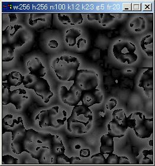
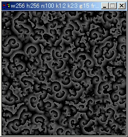
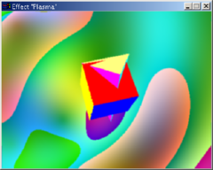
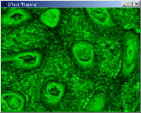

2000年～2002年に作った。
C++ source code with Windows executable binary (112kb, NO WARRANTY).
This program only shows you a window like above.
The source depends on the boost library. Maybe this can be built with *nix or Mac, only by changing depend.cpp to use syd::SDLWindow.
|  |  |
| g=5 | g=15 |
C++ source code with Windows executable binary (92.9kb, NO WARRANTY).
An implementation of a cellular automaton, hodgepodge machine. This program shows you various patterns, depending on the value of ``g''.
The source depends on the boost library. Maybe this can be built with *nix or Mac by switching to syd::SDLWindow.

C++ source code with Windows executable binary (142kb, NO WARRANTY).
Plasma was a popular visual effect in megademos.
By changing #define TEST_9_? in plasma_main.cpp, you can obtain my variant of the plasma (green mud, above right picture).
"Blur" part uses some inline assembler (to work with 200MHz MMX Pentium), so I'm not sure this can be built on other platforms.
Keigo IMAI